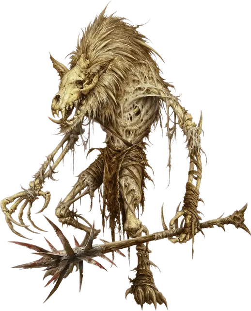

Иссохший гнолл
Gnoll Witherling
Средняя Нежить, хаотично-злая

Класс Доспеха 12 (природный доспех)
Хиты 11 (2к8 + 2)
Скорость 30 футов
| мод | спас | ||
|---|---|---|---|
| СИЛ | 14 | +2 | +2 |
| ЛОВ | 8 | −1 | −1 |
| ТЕЛ | 12 | +1 | +1 |
| мод | спас | ||
|---|---|---|---|
| ИНТ | 5 | −3 | −3 |
| МДР | 5 | −3 | −3 |
| ХАР | 5 | −3 | −3 |
Иммунитет к урону яд
Иммунитет к состояниям отравление, истощение
Чувства тёмное зрение 60 футов, пассивное Восприятие 7
Языки понимает Гноллий, но не говорит
Опасность 1/4 (50 опыта)
Бонус мастерства +2
Среда обитания Арктика, Лес, Луг, Холмы
Особенности
Буйство. Когда гнолл уменьшает хиты существа до 0 рукопашной атакой в свой ход, он может бонусным действием передвинуться на расстояние до половины своей скорости и сделать атаку укусом.
Действия
Мультиатака. Иссохший совершает две атаки: одну укусом и одну дубинкой или две атаки дубинкой.
Укус. . Рукопашная атака оружием: +4 к попаданию, досягаемость 5 футов, одна цель. Попадание: 4 (1к4 + 2) колющего урона.
Дубинка. . Рукопашная атака оружием: +4 к попаданию, досягаемость 5 футов, одна цель. Попадание: 4 (1к4 + 2) дробящего урона.
Реакции
Мстительный удар. . В ответ на то, что хиты какого–либо Гнолла уменьшены до 0 не далее чем в 30 футах от иссохшего, он совершает рукопашную атаку.
Описание
Я слышал, что колдун при помощи магии превращал последних иссохших из уничтоженной банды в свою ударную силу против врагов. И у него это хорошо получалось, пока Йееногу
не послал за ним семь банд.
– Воло
Иногда гноллы сражаются друг с другом, для определения лидера в банде или из за сильного голода. Даже в обычных условиях гноллы, которые лишены жертв слишком долго, не могут контролировать свой голод и жажду убийства. В конце концов они начинают сражаться между собой.
Выжившие пожирают плоть своих убитых товарищей, но сохраняют их кости. Затем, с помощью темного ритуала Йеногу, они возвращают останкам подобие жизни в виде иссохших гноллов.
Иссохшие действуют точно так же как и при жизни, путешествуют со своими товарищами и убивают всех на своем пути. Они не едят и не испытывают голода, оставляя больше мяса для остальной банды.Иссохшие гноллы не способны использовать оружие сложнее простой дубины.
Природа нежити. Как нежить, иссохшие гноллы, не нуждаются в воздухе, еде, воде и сне.
См. дополнительно статью: "Бестиарий: Гноллы"